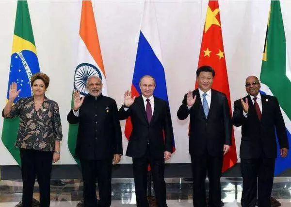

收录于合集

门洪华
同济大学同济特聘教授、政治与国际关系学院院长、中国战略研究院院长
党的十八大以来，在新中国成立特别是改革开放以来我国发展取得的重大成就基础上，党和国家事业发生历史性变革，中国站到了新的历史起点上，中国特色社会主义进入了新的发展阶段。9月5日，在新兴市场国家与发展中国家对话会上，国家主席习近平发表重要讲话，强调各方要加强团结协作，共同构建开放型世界经济，共同落实2030年可持续发展议程，共同把握世界经济结构调整的历史机遇，共同建设广泛的发展伙伴关系，携手开辟公平、开放、全面、创新的发展之路，为世界经济增长作出更大贡献。
近代以来，久经磨难的中华民族实现了从站起来、富起来到强起来的历史性飞跃，社会主义在中国焕发出强大生机活力并不断开辟发展新境界，中国特色社会主义拓展了发展中国家走向现代化的途径。在世界进入深入转型之际，中国嵌入全球化的深度与广度史无前例，在完善全球治理、维护地区与全球安全、运筹大国关系等方面，充分体现出大国的自信与责任担当，在解决人类共同面对的问题上，中国以其世界理想为引领，贡献了中国智慧、提供了中国方案。
一、世界深入转型与中国全面崛起
冷战结束尤其是进入21世纪以来，世界进入深入转型期，并具体体现为权力转移、问题转移和范式转移。所谓权力转移，即行为体及其权力组成发生了巨大的变化。这尤其体现在，非西方国家的群体性崛起引人注目，西方大国总体实力相对下降，传统大国和新兴大国开始进入相互调和适应、合作竞争的磨合期。权力转移导致具有重大战略意义的问题转移。这具体表现在全球性问题激增，国际议程愈加丰富，安全问题趋于泛化，非传统安全影响力上升。问题转移必然导致国家战略的调整，生存不再是国家唯一的关注核心，发展和繁荣在国家战略中的重要性进一步提升。权力转移和问题转移导致了国际关系的范式转移，即全球性挑战需要各国通力合作来应对，在一定程度上促成了世界各国共存共荣的全球意识，国家间合作得到鼓励，国家间基于共同利益的合作与协调具有更基础性的作用。这些变革昭示着全球治理的前景，也在一定意义上为社会主义模式在全球再次崛起提供了思想基础和物质基础。
世界面对着一个全面崛起和更加自信、开放的中国，中国面对着一个形势更加复杂、变化更加深刻、机遇与挑战并存的世界。为了直面国内外挑战、抓住国际机遇、实现可持续发展，中国正在构建以融入全球、变革自身、塑造世界为核心的和平发展战略框架。以此为基础，中国的全球战略定位进一步明确：现行国际体系的参与者、建设者、贡献者，国际合作的倡导者，和平发展的实践者，共同发展的推动者，多边贸易体制的维护者和全球经济治理的建设性参与者和积极引领者。
二、促进世界和平发展的中国理想
习近平总书记倡导的人类命运共同体堪称中国的世界理想的精准表达，展现了中国的思想高度和未来志向，体现了推动中国与世界良性互动的哲学思考。面向未来，实现中华民族伟大复兴的中国梦发挥着战略指引作用。中国梦是人民美好追求、国家发展目标和民族复兴夙愿的高度浓缩。中国梦是民族复兴、人民幸福梦，也是和平发展、合作共赢梦，与世界人民的美好梦想息息相通。
中国梦的实现，有赖于对“中等收入陷阱”和“修昔底德陷阱”的跨越。前者的根本在于党中央牢牢把握改革主动权，科学转变发展理念，加快转变经济发展方式，加大经济结构调整力度，实施创新驱动战略，全面推进依法治国，遵循良法善治之道，实现改革、发展、稳定之间以及稳增长、调结构、惠民生、促改革之间的最佳平衡，促进中国经济行稳致远。后者的关键则在于能否向世界展现可预期、可接受、可追随的中国愿景，向世界提供处理国际关系的中国韬略和中国方案，能否以协和万邦的胸襟、开放包容的气度、合作共赢的追求全面融入国际社会，求同存异、聚同化异，为中华民族伟大复兴凝聚最广泛的支持。
三、为世界和平发展贡献中国智慧
在促进世界和平发展上，中国领导人站在人类历史进程的高度深入思考，提出了一系列重要主张并加以实践落实，在世界引起了积极的回应，实质性地促成了中国与世界的良性互动。
中国智慧，以合作共赢为利益导向。走和平发展道路是中国人民对实现自身发展目标的自信和自觉，要更好地统筹国内国际两个大局，坚持开放的发展、合作的发展、共赢的发展。强调互利共赢精神，倡导人类命运共同体意识，主张世界各国在追求本国利益时兼顾他国合理关切，在谋求本国发展中促进各国共同发展，呼吁建立更加平等均衡的新型全球发展伙伴关系。
大型政论专题片, 勾勒出中国特色大国外交的理论框架
中国智慧，以正确义利观为价值追求。正确义利观体现了对中国未来国际地位和作用的战略谋划，意味着中国从世界和平与发展的大义出发，以更加积极的姿态参与国际事务，坚持不懈做和平发展的实践者、共同发展的推动者、多边贸易体制的维护者、全球经济治理的参与者，为推动人类进步事业发挥更大作用。
中国智慧，以新发展理念为实践原则。创新、协调、绿色、开放、共享五大发展理念是“十三五”乃至更长时期中国发展思路、发展方向、发展着力点的集中体现，是改革开放近40年中国发展经验的集中体现，反映出党中央对我国发展规律的深刻认识。
中国智慧，以新型国际关系为战略指向。新型国际关系的基础是中国坚持和平发展道路选择，致力于成为新型大国，奉行具有中国特色的大国外交，其核心是合作共赢，以开放包容的建设性路径促进国家目标的实现，以协调合作的建设性方式促进国际关系的优化，即通过合作实现共赢，打造人类命运共同体，共同为一个更美好的世界而努力。
四、为世界和平发展提供中国方案
改革开放以来，中国经济快速发展，综合国力稳步提升，为世界和平发展提供了不竭的动力。中国道路是迄今为止最为成功的非西方国家现代化发展道路，中国道路的开创与发展具有重大世界意义。中国道路为发展中国家提供了有别于西方的道路选择，为人类社会发展道路的探索提供了有益启示。党的十八大以来，以习近平同志为核心的党中央不仅着眼于中国自身的发展，更将中国发展放到全球视野中，就世界和平发展的诸多议题提出了一系列“中国方案”。
中国方案，以完善全球治理机制为核心目标。世界走到全球治理体制变革的关口，中国提出完善全球治理的“中国方案”，顺应时代潮流，符合各国利益，为推动全球治理体制更加公正合理、增进人类共同利益、促进世界和平与发展作出了巨大贡献。中国积极展现大国担当，在发展中国家的合作中起到引领者的作用，大力推动金砖国家深入合作，通过务实举措帮助发展中国家发展。

(2017年9月3日至5日，金砖国家领导人第九次会晤将在福建厦门举行，主题是：“深化金砖伙伴关系，开辟更加光明未来”)
中国方案，以伙伴关系网络为全球视野。中国伙伴关系战略以和平共处五项原则作为战略基础，以维护国家利益和拓展国际影响作为战略方向，以政治互信、经济共赢、文化交融、社会互动和安全支撑作为战略手段，通过双边关系的改善带动全球战略的拓展。中国伙伴关系战略的全球意义在于，提供对话合作的战略框架，成为新型国际关系的典范。
中国方案，以东亚和中国周边地区为重点。东亚是中国政治、安全、经济利益集中的地区。中国致力于以汇聚共同利益为基础开展东亚开放性合作，通过制度化合作发展东亚利益共同体、责任共同体，大力促成东亚命运共同体。中国重视东盟的战略价值，提出与东盟携手建设中国—东盟命运共同体，设立中国—东盟海上合作基金，与东盟国家共同建设21世纪“海上丝绸之路”，打造中国—东盟自由贸易区的升级版，力争凝聚共同利益，在新一轮东亚乃至亚太秩序的构建中发挥强有力的塑造和引导作用。
中国方案，以“一带一路”为核心抓手。“一带一路”已成为各国实现共同发展、合作共赢的重要平台。中国通过“一带一路”将沿线国家紧密联系在一起，通过建设基础设施实现互联互通，在此基础上开展金融、贸易、投资等各方面广泛合作，促进了沿线各国的发展，增进了各国间的相互联系，为世界经济复苏和强劲增长注入了强大动能。
中国方案深刻把握中国崛起与世界转型相辅相成造就的新格局，将发展问题置于全球宏观政策框架的核心位置，为开辟新的经济全球化时代贡献了中国智慧。在一个充满不确定的时代，中国已经成为世界稳定之锚，成为世界和平发展的积极推进者和战略引领者。
文章来源： 《中国社会科学报》
筛选： 红尘 编辑： 沉安
声 明
国政学人微信公众平台系非盈利学术平台。建立初衷是方便广大学人进行学术研究，促进学术的传播和交流，不做任何商业用途。如有任何权利问题，请直接与我们联系。